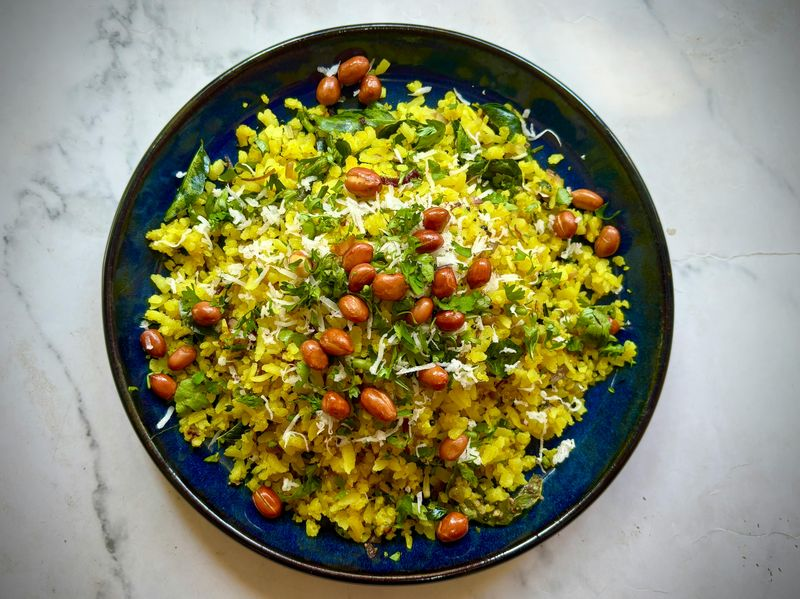

Poha
Madhya Pradesh

Poha is a light, nutritious breakfast dish made from flattened rice that holds a special place in the hearts of people from Madhya Pradesh. This simple yet delicious dish is prepared by cooking the flattened rice with mustard seeds, curry leaves, turmeric, onions, and green chilies, often garnished with coriander, sev (crispy noodles), and a squeeze of lemon. The result is a fluffy, mildly spiced dish that's both comforting and satisfying. Poha is incredibly popular as a morning meal across central India and is loved for its ease of preparation and wholesome taste.